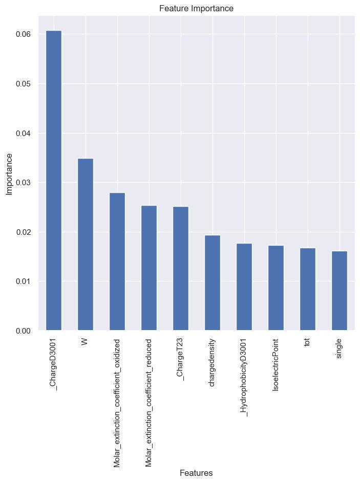

The study utilizes a diverse dataset comprising annotated sequences of antibiotic-resistant sequence from CARD and
susceptible proteins obtained from Uniprot. Features (AAC, CTD, PAAC, APAAC, DPC) were calculated using propythia.
Various machine learning algorithms, such as support vector machines, random forests, Xtreme gradient boosting,
K-Nearest Neighbor and Gauss naïve bayes.
To assess the performance of the developed models, rigorous cross-validation procedures are implemented, and evaluation
metrics, such as accuracy, precision, recall, and area under the receiver operating characteristic curve (AUC-ROC), are
employed. Additionally, the models are subjected to external validation using independent datasets to gauge their
generalization capabilities.
The results highlight the potential of these models to accelerate the understanding of resistance mechanisms and
facilitate the design of targeted interventions to combat antibiotic resistance. Future studies can build upon this
research to enhance the accuracy and interpretability of the models and expand their application to large-scale
genomic datasets, thereby advancing our ability to address the pressing challenge of antibiotic resistance.
Bacteria are naturally resistant to some antibiotics, for example having a thick cell wall make accessing the target
impossible for some of the antibiotics, but resistance can be developed through mutations and horizontal gene transfer
as well. A microbes capacity to withstand the effects of a certain antibiotic due to innate structural or functional
traits is known as intrinsic resistance (FIG. 1). Not having a target for the antibiotic to bind to is one of the
mechanisms of intrinsic resistance in a single species. For example, the biocide triclosan is very effective against
Gram-positive bacteria, but it is ineffective against gram negative bacteria, which have a thicker LPS layer for
protection.
Microbes can also acquire or evolve antibiotic resistance in addition to innate resistance. This can be mediated by a
variety of mechanisms which are as follows: To reduce the concentration of antibiotic within the cell using efflux pumps
or blocking the entry of antibiotics within the cell; Modification of the antibiotic target or post translational
modification of target can also prevent antibiotic binding; and, those that have the ability to modify or hydrolyze
the antibiotic molecule.
4657 sequences of antibiotic resistant proteins in fasta format were collected from CARD database (https://card.mcmaster.ca/), the length varied from 53 to 1452, and 6000 random bacterial peptides were downloaded from Uniport database (https://www.uniprot.org/), by choosing bacteria as a filter and sorting length 200 to 800.Both the positive and negative datasets were checked for redundancy amongst each other as well. Using Propythia, 5 protein descriptors were calculated.
| Protein Descriptors | Data Represented |
|---|---|
| AAC (Amino Acid Composition) | Relative abundance of amino acid within a protein sequence. |
| CTD (Composition, Transition and Distribution) | It is used to represent the physicochemical properties of amino acid sequences |
| PAAC (Pseudo amino acid compostion) | It is a protein descriptor that is used to represent the sequence-order information of a protein sequence |
| DPC (Dipeptide composition) | Counts the composition of dipeptides within the protein sequence. |
| APAAC (Amphiphilic Pseudo Amino Acid Composition) | APAAC calculates the pseudo amino acid composition for each physicochemical property, such as hydrophobicity, hydrophilicity, polarity, and charge. |
I found the summary of the dataset using pandas .describe() and .shape() function, It consisted of 10,659 observations
and 192 characteristics and the count, mean, standard deviation, minimum and maximum values and the quantiles of the
data were analyzed and visualized using boxplots. Using pandas .corr() function the correlation between the features
was calculated and visualized using Seaborn library as a heatmap(FIG 2). Highly correlated features were removed.The dataset
containing all the features have been uploaded online
here.
Machine learning in Python with Scikit-learn (https://scikit-learn.org/stable/) was used to evaluate the performance
of 5 machine learning algorithms, namely, Gaussian Naive Bayes (gNB), Support Vector Machine (SVM), Random Forest (RF),
Gradient Boosting Classifier (GBC) and One more. The dataset containing all the features was used for training and
testing the machine learning algorithms. The performance metrics include sensitivity, specificity, F1-score,
the area under the receiver operating characteristic (AUROC), Matthews correlation coefficient (MCC)
and the classification accuracy for nested 10-fold cross-validation, which were computed in an n-fold
(n = 10) cross-validation setting. The dataset was split into training and test set in the ratio of 4:1.
The trained models were used for labeling the hypothetical protein sequences along with their features,
as ‘0’ and ‘1’, where 0 is for sequences showing no antibiotic resistance and 1 is for sequence showing antibiotic
resistance.
The sequences labeled as 1 were filtered from all the sequences, and then were binned according to their approximate
length (+/-10 amino acids) along with all the known antibiotic resistance proteins, using a custom python script.
All the bins were then used for Multiple sequence alignment using MEGA 11 (https://www.megasoftware.net/)
using the MUSCLE algorithm.
The MSA sessions were used for creating phylogenetic trees, using maximum likelihood method with the default
parameters, a total of 44 phylogenetic trees were obtained with a variable number of sequences in each tree, as
they were all distributed according to their respective length. The phylogenetic tress were analyzed using MEGA’s
tree viewer any hypothetical sequence which landed close to known antibiotic resistance protein were noted and used for
further analysis, a total of 26 closely related sequences were obtained.
Domain identification
Using InterproScan (https://www.ebi.ac.uk/interpro/search/sequence/) all the 26 hypothetical protein sequences
were scanned for domains out of which 5 of them returned a known domain of which have annotated function of antibiotic
resistance.
5 different machine learning models were used to classify antibiotic resistant proteins and non-antibiotic resistant proteins, the performance metrics for all models are given in table 2.
| Random forest | SVM | Gauss naive Bayes | Xtreme gradient boosting | K- Nearest neighbor | |
|---|---|---|---|---|---|
| Accuracy | 95.3% | 88.1% | 82.9% | 95.2% | 88.7% |
| MCC | 90.0% | 75.7% | 65.7% | 90.3% | 77.1% |
| Sensitivity | 89.9% | 86.0% | 84.6% | 92.6% | 87.1% |
| Specificity | 98.9% | 89.1% | 81.5% | 97.3% | 90.1% |
| ROC-AUC | 94.4% | 87.8% | 83.0% | 94.9% | 88.5% |
| F1-Score | 94.0% | 86.3% | 81.3% | 94.5% | 87.1% |
It is observed that we got best performance for random forest classification and Xtreme gradient boosting (XGB), based on the performance metrics included here. A comparable deviation can be observed between the accuracies of different classification models.
| Features | Formula |
|---|---|
| _ChargeD3001 | Calculated negative amino acids |
| Count of tryptophan | Relative count of tryptophan |
| Molar_coefficient_oxidised | Looks for Cys-Cys bonds |
| Molar_coefficient_reduced | Looks for Cys residues |
| _Charge T23 | Looks for occurence of neutral and negatively charged amino acids |
From the table we can infer that the antibiotic resistant proteins have more negatively charged amino acids, and the tryptophan count is usually higher. A comparison of the important features between antibiotic resistant proteins and non-antibiotic resistant proteins can be visualized using a box plots (Figure3)
No overlap can be seen in ChargeD3001 between non-AR proteins and AR proteins, hence a clear abundance of amino acids ‘D’ (Aspartic acid) and ‘E’ (Glutamic acid) can be seen in antibiotic resistant proteins. A rise in tryptophan can also be seen in majority of antibiotic resistant proteins. Molar extinction coefficient looks for Cys residues capable of reducing and Cys-Cys, which are not capable of reducing.
Out of the 40 generated phylogenetic trees, 25 hypothetical proteins were found which were closely related to known antibiotic resistant proteins, these hypothetical protein sequences were scanned for domains using InterProScan, and 3 of them had a predicted domain with predicted molecular function. (Table 4)
| Accession Number | Predicted Domain | Predicted Function | Resistance Against |
|---|---|---|---|
| WP_042959742.1 | 1-52 | N-acetylmuramoyl-L-alanine amidase activity | Glycopeptides |
| WP_002323534.1 | 1-110 | phosphoric diester hydrolase activity | Macrolides |
| WP_002336533.1 | 1-224 | Nucleotide-diphospho sugartransferases | Aminoglycosides |
These enzymes have been previously associated with different mechanisms of antibiotic resistance ([50],[51],[52]) and
provide resistance against to a wide range of antibiotics including macrolides, or provide resistance through innate
mechanisms, like formation of a spore coat, which might hinder the entry of an antibiotic within a bacterial cell.
It is a type of cell-wall hydrolase that breaks the amide bond between L-alanine and N-acetylmuramic acid in glycopeptides found in cell walls,perhaps contributes to the recycling of peptidoglycan fragments. Bactericidal medications known as glycoproteins work by interacting with the terminal d-Ala-d-Ala in the pentapeptide of the precursor N-acetylglucosamine (NAG)-N-acetylmuramic acid (NAM) peptidoglycan (PG) cell wall. Cell wall integrity is lowered as a result of binding's blockage of transpeptide linkage, which ultimately leads to cell death. This enzyme might provide resistance against antibiotics, capable of binding to peptidoglycan residues by modifying the structure of peptidoglycan or it’s precursors.
Phosphoric diester hydrolase is a broad term that refers to enzymes involved in the hydrolysis of phosphodiester bonds. Generally speaking, phosphoric diester hydrolases have a variety of roles and perform a number of different biological tasks, such as the breakdown of DNA and RNA, nucleotide metabolism, signalling molecule metabolism, and phospholipid metabolism. These enzymes participate in numerous metabolic and signalling pathways within cells and are essential for preserving the integrity and functionality of nucleic acids. Antibiotics which have the ability to bind to DNA, can have their function interrupted by this enzyme capable of hydrolyzing the phosphodiester bonds freeing DNA of the antibiotic molecule and ligating it afterwards.
It is generally recognized that enzyme-catalyzed modification is the most common form of aminoglycoside resistance. It is known that resistant bacteria have over 50 different types of aminoglycoside-modifying enzymes, which are what render aminoglycosides inactive. These three classes of aminoglycoside-modifying enzymes, including aminoglycoside phosphotransferases, aminoglycoside acetyltransferases, and aminoglycoside nucleotidyltransferases, almost exclusively introduce chemical groups (mostly acetylation, adenylation, and phosphorylation) into the neamine core (rings I and II) of the aminoglycosides, including neomycin and kanamycin, thus causing a lowered or abolished antibiotic affinity to the RNA.
In this study we demonstrated the usefulness of machine learning in classifying and predicting antibiotic resistant proteins, with the help of fairly easy calculable protein descriptors which can be calculated with just the sequence of the protein itself. Random Forest and Xtreme Gradient Boosting were able to classify the proteins as antibiotic resistant proteins 95% of the time. With the help of important features it is observed that a rise in the negatively charged amino acids as well as tryptophan can be seen in antibiotic resistant proteins. This pattern is not unique to antibiotic resistant proteins, which implies a deeper relationship between the features and labels. Antibiotic resistance is a complex phenomenon, mostly comprising of cascade of reactions working together to provide antibiotic resistance to the bacterium. Elucidation of the mechanism of antibiotic resistance requires further studies. Nevertheless, being able to predict antibiotic resistance Insilco will help to provide a list of molecules capable of conferring antibiotic resistance to the organism and help in finding the mechanism or the proteins involved in it.